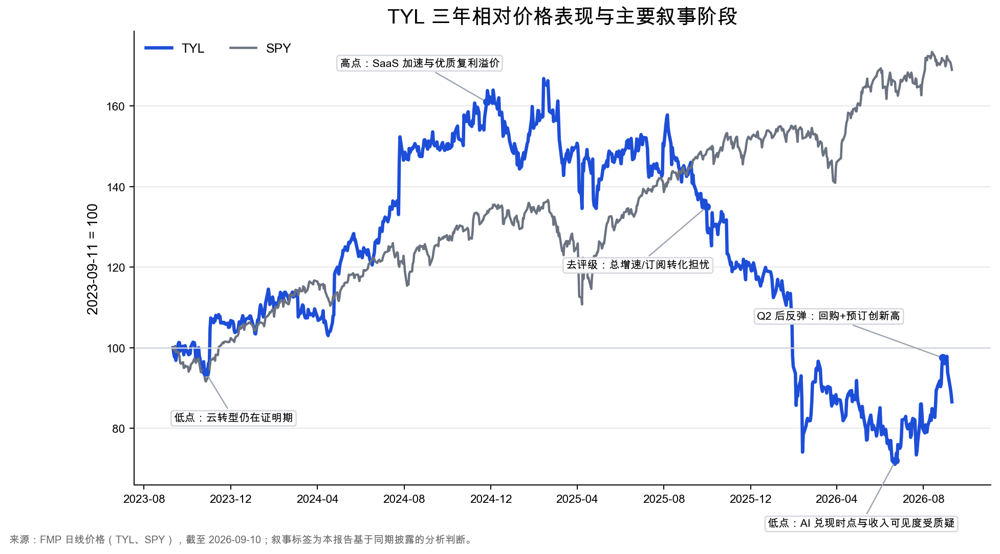
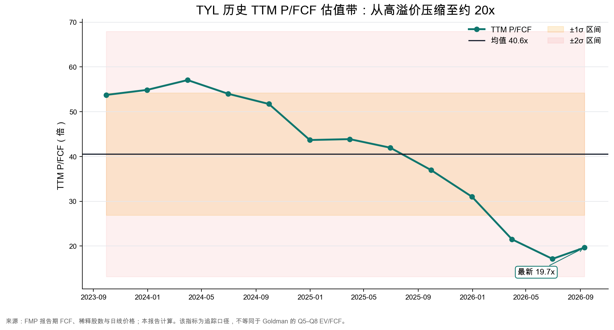
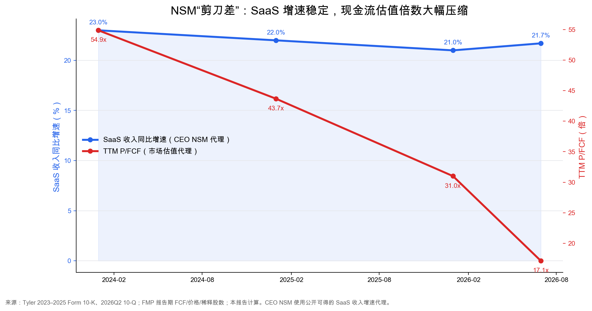

Ticker: TYL
Date: 2026-09-11
Classification: 观察名单——等待证据
Evidence confidence: 经营事实中高；市场共识与估值中等
Underwriting status: 初步筛选，尚不足以进入优先深度研究
结论：Tyler 是一家具备真实系统黏性、云迁移跑道和现金流能力的优质政府软件公司，但现阶段应列入观察名单，不应直接晋级优先深度研究。股价从 2025 年高点显著回落，跟踪口径 TTM P/FCF 已由约 55x 压缩至约 20x；与此同时，SaaS 收入增速仍保持在 21%–23% 左右，构成值得跟踪的“健康滞后”迹象。可是，市场并非看不到云迁移：最新卖方争议恰恰围绕订阅收入低于预期、预订加速尚未进入收入指引、以及 AI 何时增量贡献。换言之，已知事实与潜在错价之间仍缺一座桥。[S3][S5]
为什么现在值得看：截至 2026 年 9 月 10 日，TYL 报 $335.48，较 52 周高点低约 39%；公司上半年回购约 5.6% 的流通股并新增 $15 亿授权，管理层明确把当前估值视为有吸引力。Q2 SaaS 收入增 21.7%、预订创新高、经常性收入占比 86.7%，但 ARR 仅增 8.2%、交易收入仅增 3.5%。这使下一步验证非常清楚：如果新签/迁移 ACV 能推动 ARR 重回双位数，且 FCF/股持续增长，当前倍数可能过低；如果 SaaS 的高增速长期只是在维护收入流失与低增交易收入之间搬家，则估值重置是合理的。[S1][S3]
经营和市场数据足够新，能够支持“观察名单”判断；对市场共识的独立交叉验证偏弱。Goldman Marquee 的规定认证入口不可用、FreshRSS 没有检索到 Tyler 文章，且 IGB 只有 2018 年历史材料，因此不能把当前市场心理或买方观点写得比证据更确定。
| Source Category | Latest Source Date | Freshness Status | Age vs. Report Date |
|---|---|---|---|
| 卖方报告 | 2026-08-02（Goldman Sachs 2Q26） | 基本当前；仅一家银行 | 约 40 天 |
| 财报电话会 | 2026Q2，2026-07-30 | 当前 | 约 43 天 |
| SEC 文件 | 2026Q2 10-Q，2026-07-29 | 当前 | 约 44 天 |
| 买方/投资者观点 | 2018-11-27（Scuttleblurb） | 仅作机制参考，已过时 | 约 7.8 年 |
| 播客/深度讨论 | 2025-07-22（Tyler 产品经理） | 机制仍相关；非当前财务证据 | 约 14 个月 |
| Item | Latest Situation |
|---|---|
| 市场数据 | $335.48（2026-09-10 收盘）；52 周区间 $270.71–$553.19；市值约 $137 亿；FMP TTM 企业价值约 $143 亿。最新流通股数据为 40.95m，Q2 加权稀释股数 41.85m。[S1][S2] |
| 最新经营表现 | Q2 收入 $645.1m、同比 +8.2%；SaaS $230.6m、+21.7%；经常性收入 $559.5m，占比 86.7%；ARR $2.24bn、+8.2%；FCF $118.5m、+34.7%，但约 $30m 的现金税下降帮助了同比。[S3][S4] |
| 价格与技术面 | 30 个交易日累计约 +3.8%，但从 9 月初 $379.27 快速回撤。最新价低于 EMA12（$354.34）和 EMA26（$346.18），贴近 EMA50（$335.06）；RSI 44.9、MACD 柱转负，说明反弹动能衰减，尚无技术性确认。[S7] |
| 持仓与资本配置 | 自由流通比例约 93.5%。FMP 的 2026Q2 13F 汇总股数超过公司已发行股数，口径不可用于精确机构持仓结论；可靠空头比例序列亦未取得。公司层面更有信息量：上半年回购约 5.6% 股份，并新增 $1.5bn 授权。[S1][S8] |
| Key Metric | Value | Implication |
|---|---|---|
| SaaS 收入增速 | 21.7% | 连续 22 个季度保持 20% 以上，是云迁移速度最直接的公开代理；但收购、提价和迁移混合在内。 |
| ARR / 增速 | $2.24bn / 8.2% | 比单独 SaaS 更接近公司整体经常性价值捕获；个位数增速是当前争议的核心。 |
| 2026 指引 | 收入 $2.535–2.575bn；FCF 利润率 26%–28% | 收入中点与 FMP 共识几乎一致，市场需要预订向收入和 FCF 的兑现，而非更多远期叙事。 |
Goldman 明确用 Q5–Q8 EV/FCF 估值，并因“AI 何时增量贡献”的可见度有限，把目标倍数从 23x 下调到 20x、目标价从 $435 下调至 $395。按 FMP 当前数据，TYL 约为 5.9x TTM EV/Sales、20.0x TTM EV/FCF、25.6x FY26 共识 EPS 和 21.8x FY27 共识 EPS。FMP FY27 共识收入 $2.807bn、同比约 +9.9%，EPS $15.37；这意味着市场并没有要求恢复历史 50x+ 现金流倍数，但仍要求低双位数附近的收入增长与持续利润/现金流扩张。[S1][S5]
已计价：政府数字化、云迁移和低流失的优质属性仍获一定溢价；可能未充分计价：云端单一版本带来的支持成本下降、AI 工作流触及劳动预算、交易计费绕开政府拨款限制，以及大额回购对每股 FCF 的放大；市场正确担心：预订转收入的实施周期、维护收入迁移抵消、交易业务量价/商户费、AI 仍未成为迁移主因，以及可转债和回购的资本配置效率。[S4][S5]
BSY、GWRE、APPF 是纵向软件经济性的参考，并非政府软件的完美同业；TYL 的政府采购周期、交易收入与维护转 SaaS 使直接可比性有限。以下为 FMP 同日口径，FY27 增速基于共识均值计算。
| Company | Market Cap | TTM EV/Sales | TTM EV/FCF | FY27E 收入增速 | TTM FCF 收益率 |
|---|---|---|---|---|---|
| TYL | $13.7bn | 5.9x | 20.0x | 9.9% | 5.2% |
| BSY | $9.1bn | 6.4x | 20.4x | 10.4% | 5.5% |
| GWRE | $11.7bn | 8.1x | 41.3x | 17.2% | 2.5% |
| APPF | $7.4bn | 6.9x | 26.6x | 17.5% | 3.7% |
来源：FMP，2026-09-10/11。FMP 聚合字段可能与公司/卖方调整口径不同；同业表用于框架比较，不用于机械套倍数。[S1]
三张图使用 FMP 价格/财务数据与 SEC 披露构建。估值图为跟踪口径 TTM P/FCF，与 Goldman 的前瞻 Q5–Q8 EV/FCF 不完全相同；NSM 图以公开可得的 SaaS 收入增速代理 CEO NSM，不把未披露的客户产出指标伪装成精确数据。



| Lens | Assessment |
|---|---|
| CEO：云/SaaS 采用与工作流深度 | 公开代理为 SaaS 收入增速、新签及本地部署迁移 ACV。真正产品价值是政府员工更快、更安全地完成关键工作，并让居民交易/服务数字化；管理层希望由每客户 2–3 个产品扩展至 8–10 个。[S4] |
| 长期投资者：每股可持续 FCF | 以 ARR 质量、经常性收入占比、客户流失、云端毛利/支持效率和交易利润率作桥梁。每股口径可把回购收益与可转债/股权激励成本同时纳入。 |
| 市场共识：订阅/ARR 斜率 × EV/FCF | Q2 订阅收入 +12%，低于 Street +14%；市场要求预订加速转为收入上调，并用前瞻 EV/FCF 为兑现时点定价。[S5] |
| 错配类别：健康滞后，尚未证明为叙事陷阱 | SaaS 增速稳定而 P/FCF 剧烈下压，说明市场可能低估迁移的累积效应；但 ARR 与交易收入疲弱、AI 贡献仍早，亦可能说明旧估值过高而非新估值错误。 |
政府人员短缺、网络安全与数字服务需求 → 关键 ERP、法院、公共安全和居民服务迁云 → 数据与跨部门流程集中在 Tyler 系统中 → 云端独占功能、连续发布、AI 自动化与交叉销售 → 更高 SaaS ARR、按交易收费和低流失 → 版本/支持整合与每客户产品数上升 → FCF/股增长
这条链有实证起点：2025 年客户流失约 2%，Q2 SaaS 增 21.7%，法院旧版本客户比例三年由管理层所称 89% 降至 7%；但终点仍需验证。云托管成本和商户费正在增长，AI 还不是显著迁移驱动，且 Q2 FCF 同比受现金税时点帮助。[S2][S4]
| 情景 | FCF 假设 | EV/FCF | 隐含价值/股 | 关键含义 |
|---|---|---|---|---|
| 熊 | 2027E $700m | 17x | 约 $271 | ARR 维持个位数、交易/实施拖累，较现价约 -19%。 |
| 基准 | 2027E $829m | 20x | 约 $383 | 接近 Goldman 的 $395；较现价约 +14%，不足以单独证明重大错价。 |
| 牛 | 2028E $950m | 22x | 约 $486 | 云/AI/交易兑现且倍数部分修复，较现价约 +45%。 |
本报告情景采用当前净债务约 $560m、Q2 稀释股数 41.85m；FCF 基准/牛市参考 Goldman 2027E/2028E $829m/$950m，未假设其预测净现金全部实现，因此偏保守。公司 $1.44bn 2031 可转债的 capped-call 初始有效转换价为 $655.77，当前价下暂无直接稀释，但债务和资本配置仍需完整桥接。情景为分析判断，不是目标价。[S2][S3][S5]
错误锚点：未通过。市场可能过度依赖短期订阅/ARR 斜率，而低估云端单一版本、交易计费和 AI 对每客户价值的累积效应；但当前卖方已经明确采用这些长期逻辑，争议是兑现时间而非框架盲点。缺少多银行和当前买方材料，无法证明市场锚点“错”而不仅是更谨慎。
若判断正确的材料性上行：部分通过。FMP 目标价共识 $414.38、Goldman $395，分别约有 23.5% 和 17.7% 上行；真正有组合意义的是约 $486 的牛市情景，但它需要 2028 FCF 接近 $950m 且倍数回到 22x。基准情景仅约 14% 上行，风险回报并不压倒性。[S1][S5]
清晰验证路径：通过。未来 2–4 个季度可直接观察 SaaS 新签/迁移 ACV、ARR 是否回到双位数、剔除已终止州合同后的交易收入、FCF 税收正常化、云端毛利/支持效率、以及 AI 客户从试点到新增 ARR 的转化。因此公司值得监控，但在“错误锚点”与基准回报尚未达标前，不应晋级。
未取得：FreshRSS 没有检索到 Tyler 相关文章；规定的 Goldman Marquee 认证 Chrome 控制面不可用；研究档案未提供第二家当前银行报告；IGB 无 2018 年后的 Tyler 专门观点；可靠空头比例和可比机构持仓序列未取得。以上缺口降低市场共识与持仓判断置信度，但不改变“观察名单、等待证据”的结论。